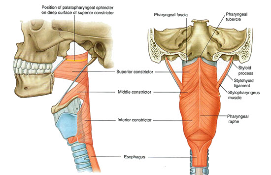
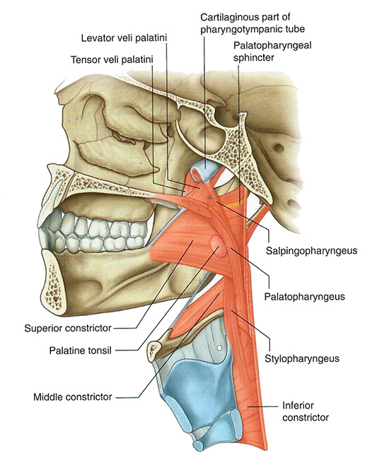

Pharynx and Larynx: Module 2 - Page 7 of 8
We will now show a lateral view as we add the pharyngeal muscles. Identify the component parts of the airway befor proceeding.
|  |
| 🔍 Constrictors |
|  |
| 🔍 Longitudinal |
| Add the superior constrictor. | |
| Add the middle constrictor. | |
| Add the inferior constrictor. | |
| Add the salpingopharyngeus. | |
| Add the stylopharyngeus. | |
| Add the palatopharyngeus. |